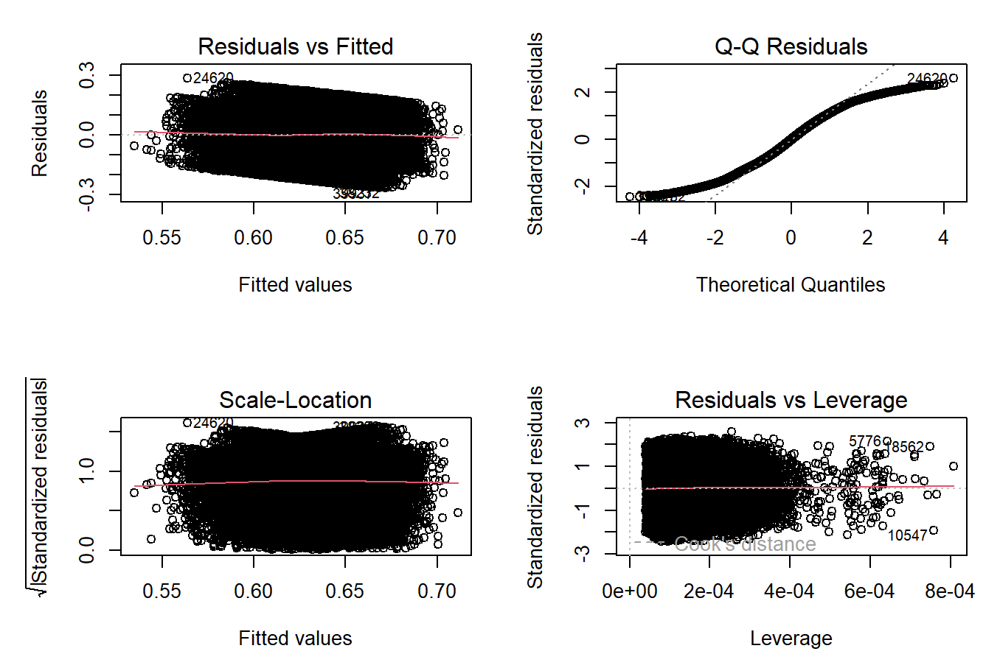
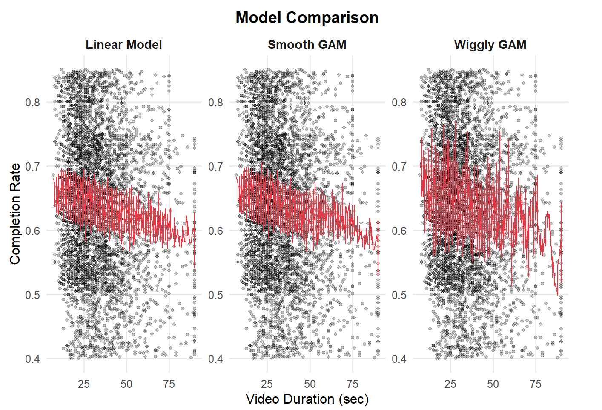
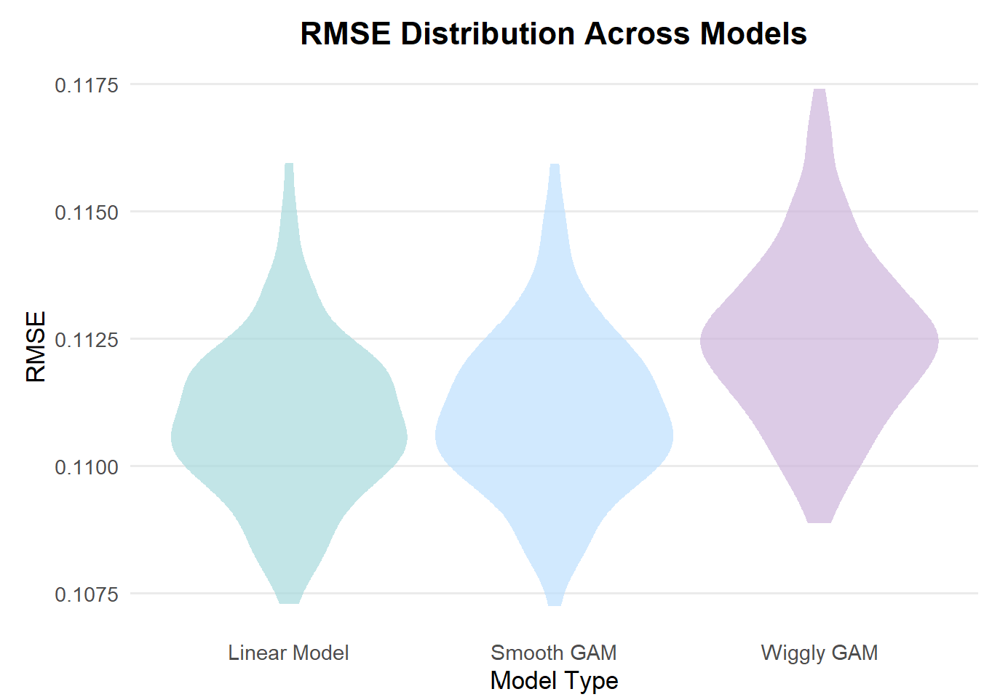
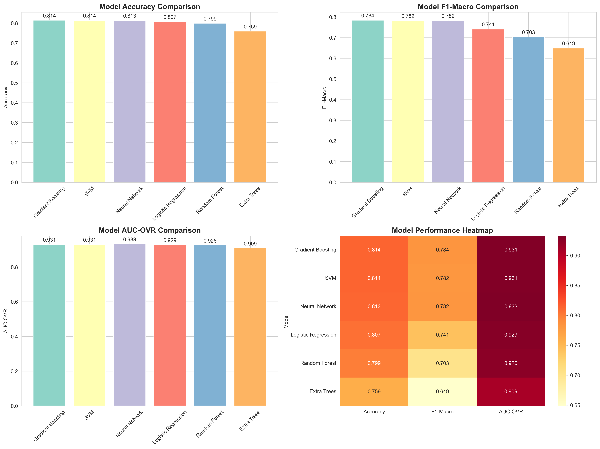
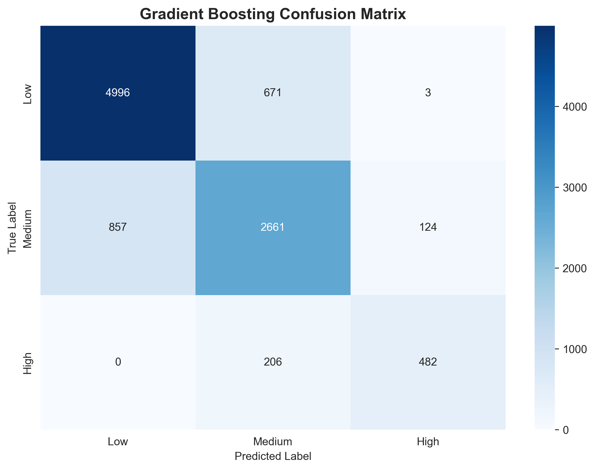
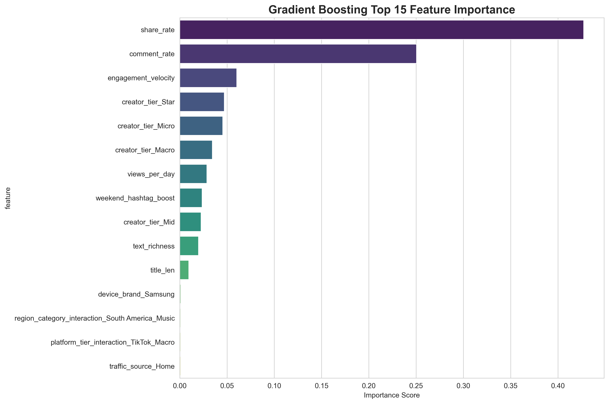

A concise summary of project motivation, data, methods, and key findings.
Short-form platforms such as TikTok and YouTube Shorts generate massive volumes of user interaction data. Understanding patterns that drive completion rate (viewer retention) and trend label (whether a video becomes trending) provides insight into how videos perform and how creators or platforms might optimize content.
Our project is motivated by two central questions:
We aim to distill interpretable insights, not merely build high-accuracy models. Completion rate is influenced by content quality and recommendation algorithms, neither of which is directly measured. Therefore, we expect relatively low explanatory power from traditional statistical models, and the analysis is intended as a descriptive exploration.
The project began with an interest in understanding viewer retention by examining completion rate. Our initial plan included exploratory data analysis, followed by regression modeling and then building a model using machine learning methods to evaluate how to predict completion rates from metadata. Early results showed that completion rate was extremely difficult to predict, even when more flexible machine learning models were applied. This outcome suggested that completion behavior is strongly driven by unobserved factors such as creative quality and recommendation exposure, which are not present in metadata. As a result, completion rate was treated only as a descriptive target, and the focus shifted to exploratory identification of structural associations rather than building predictive models.
These findings also prompted us to adjust the scope of our research. Since metadata did not seem to explain view completion rates well, we began to consider whether other performance metrics were more suitable for prediction. Trend labels emerged as a suitable alternative because they may capture platform-level dynamics and rely less on unobserved content attributes. This consideration led to the second part of the project, which examines the extent to which trend labels can be predicted using machine learning methods. The evolution of these research questions reflects a growing understanding of both the strengths and limits of metadata in explaining short-form video performance.
Platform: Kaggle
Dataset Type: Social media analytics, synthetic/curated dataset
Size: ~50,000 video records
Time Period: 2025 (January-September)
views: Total views count
likes: Likes count
comments: Comments count
shares: Shares count
saves: Saves count
completion_rate:
avg_watch_time_sec / duration_sec
engagement_rate:
(likes+comments+shares+saves) / views
completion_rate
trend_label
Categorical variables converted to factors
Derived metrics
There are no missing values in the dataset, so the data cleaning process is not included.
(Visualizations, summaries, and exploratory statistical analyses. Justify the steps you took, and show any major changes to your ideas.)
Completion rate serves as a key performance metric for short-form videos, reflecting how fully viewers watch a given video. Although creators often attribute retention to content quality, narrative structure, or emotional engagement, these elements are unobserved in platform metadata. Our modeling objective is therefore not prediction, but descriptive quantification of associations between completion_rate and observable characteristics such as duration, engagement metrics, posting timing, and creator attributes.
Given the inherent limitations of metadata and the complexity of viewer behavior — shaped by recommendation algorithms, scrolling patterns, and individual preferences — we expect the explanatory power of the regression models to be modest. Nonetheless, regression analysis still offers a clear way to assess which metadata features are associated with completion rate and to identify where nonlinear or structural patterns may warrant more flexible models.
We first developed three linear models to examine these associations: (1) a baseline regression including only timing-related features; (2) an engagement-augmented model that incorporates log-transformed interaction metrics; and (3) a full specification that adds creator-level attributes and applies backward stepwise selection to identify a more parsimonious set of predictors. This progression allowed us to evaluate how the explanatory contribution of different variable groups changes as the model becomes more comprehensive. We then extended the analysis to nonlinear GAM models to assess whether more flexible functional forms capture additional structure or improve explanatory performance beyond what linear models can provide.
The baseline regression evaluates how timing-related features and basic video attributes relate to completion_rate. The estimated model is:
\[ \begin{aligned} \text{completion_rate}_i &= \beta_0 + \beta_1 \,\text{event_season}_i + \beta_2 \,\text{is_weekend}_i \\ &\quad + \beta_3 \,\text{duration_sec}_i + \beta_4 \,\text{upload_hour}_i + \varepsilon_i . \end{aligned} \]
Table 6.1 Summary of baseline linear regression
Table 6.1 reports the estimated coefficients and summarizes how basic
timing and structural attributes relate to completion rate. The
intercept reflects the expected completion rate for the reference
category, and while not substantively meaningful on its own, it serves
as the baseline against which other coefficients are interpreted.
Consistent with expectations, video duration emerges as the strongest
predictor: the coefficient for duration_sec is negative
(\(\beta_3\) = -0.0009) and highly
significant (p-value < 0.05), indicating that longer videos tend to
yield lower completion rates, even within the short-form format. Among
the seasonal indicators, only the Regular season shows a small positive
association (p-value = 0.041 < 0.05). The remaining
event_season categories, as well as is_weekend
and upload_hour, do not exhibit statistically significant
effects, suggesting that broad posting time patterns have limited
influence on completion rate in this dataset.
Overall, the baseline model highlights duration as the primary structural correlate of viewer retention, while other timing-related features contribute little explanatory power. This motivates the incorporation of engagement and creator-level variables in subsequent models.
To explore whether audience interaction patterns co-vary with viewer retention, the second model adds log-transformed engagement metrics — likes, comments, shares, and saves — to the baseline specification. These variables allow us to examine the relationship between video engagement signals and completion rates. The augmented model is presented as follows:
\[ \begin{aligned} \text{completion_rate}_i &= \beta_0 + \beta_1 \,*\text{event_season}_i + \beta_2 \,*\text{is_weekend}_i + \beta_3 \,*\text{duration_sec}_i \\ &\quad + \beta_4 \,*\text{upload_hour}_i + \beta_5 *\log(\text{likes}_i + 1) + \beta_6 *\log(\text{comments}_i + 1) \\ &\quad + \beta_7 *\log(\text{shares}_i + 1) + \beta_8 *\log(\text{saves}_i + 1) + \varepsilon_i . \end{aligned} \]
Table 6.2 Summary of engagement-augmented linear regression
Table 6.2 presents the augmented model. Duration remains the
strongest negative predictor, consistent the baseline finding. Among
engagement metrics, log_likes and log_saves
show statistically significant positive associations with
completion_rate (p < 0.05). This pattern indicates that
videos with stronger engagement signals also tend to have higher
completion rates, although the association is correlational rather than
causal. In contrast, log_comments and
log_shares are not significant, indicating that not all
engagement forms are linked to retention. The timing-related predictors
(event_season, is_weekend, and
upload_hour) continue to show limited explanatory value,
reinforcing that temporal posting patterns do not strongly shape viewer
retention.
Overall, expanding the model to incorporate interaction measures offers a modest improvement but does not fundamentally change the structure of associations identified earlier.
To examine whether creator attributes or stylistic choices add explanatory value beyond engagement patterns, the third model introduces creator-level variables such as log_creator_avg, creator_tier, and has_emoji. We define the full model as follows:
\[ \begin{aligned} \text{completion_rate}_i &= \beta_0 + \beta_1 \,*\text{event_season}_i + \beta_2 \,*\text{is_weekend}_i + \beta_3 \,*\text{duration_sec}_i + \beta_4 \,*\text{upload_hour}_i \\ &\quad + \beta_5 *\log(\text{likes}_i + 1) + \beta_6 *\log(\text{comments}_i + 1) + \beta_7 *\log(\text{shares}_i + 1) + \beta_8 *\log(\text{saves}_i + 1) \\ &\quad + \beta_9 *\log(\text{creator_avg_views}_i + 1) + \beta_{10} *\text{creator_tier}_i + \beta_{11} *\text{has_emoji}_i + \varepsilon_i . \end{aligned} \]
Because the full specification contains numerous correlated predictors, a backward stepwise procedure is applied to identify a more concise subset of variables. The results of final model are presented in Table 6.3.
Table 6.3 Summary of stepwise (backward) regression
\[ \begin{aligned} \widehat{\text{completion_rate}}_i &= \ 0.6638 - 0.0007932 \,*\text{duration_sec}_i + 0.008618 *\log(\text{likes}_i + 1) \\ &\quad + 0.002520 *\log(\text{saves}_i + 1) - 0.008323 *\log(\text{creator_avg_views}_i + 1) \\ &\quad + 0.02303\, *\text{has_emoji}_i . \end{aligned} \]
The backward stepwise model finally retains only five predictors —
duration_sec, log_likes,
log_saves, log_creator_avg, and
has_emoji — indicating that these features are the ones
most strongly associated with variation in completion rate. The negative
coefficient for log_creator_avg is particularly notable.
Holding other factors constant, videos from creators with larger average
viewership tend to show slightly lower completion rates. This may
reflect heterogeneous audience behavior or differences in content style
across creator tiers. Meanwhile, has_emoji shows a small
but statistically significant positive effect, suggesting that visual
cues in titles may enhance viewer engagement. Variables removed during
stepwise selection, such as the seasonal and posting-time indicators,
contributed little once the more informative predictors were
included.
Overall, the stepwise model produces a concise set of variables strongly linked to completion rate. This provides a clear summary of the linear relationships, establishing a useful baseline for further exploration.
The three linear models show small but incremental improvements in
fit as additional predictors are added. As shown in Table 6.4, the
baseline model explains only a small share of variation in
completion_rate (r-squared = 0.0183). Adding engagement
variables increases the r-squared to 0.0308, and the stepwise model
achieves the highest value at 0.0411.
Table 6.4 Comparison of linear regression models
Despite these incremental differences, all three models ultimately exhibit low r-squared. This is unsurprising in the context of short-form video performance, where much of viewer retention is shaped by factors not captured in metadata - such as creative quality, editing style, narrative pacing, emotional tone, and topic relevance. Completion outcomes are also influenced by platform recommendation systems, which shape exposure patterns in ways not observable in the dataset. Moreover, linear models impose additive and monotonic relationships that may be too restrictive for inherently nonlinear viewing behaviors. Together, these unobserved elements limit the explanatory power of linear models and help clarify why metadata-based regressions account for only a small fraction of the variation in completion rate.
To assess whether the stepwise model satisfies key regression assumptions, we examine the standard set of diagnostic plots. These plots provide insight into linearity, homoscedasticity, normality of residuals, and the influence of individual observations.
Figure 6.1 Diagnostic plots for the stepwise linear model

The Residuals vs Fitted and Scale–Location plots show slight changes in residual spread across fitted values, indicating mild heteroscedasticity and some non-linearity. The Q–Q plot reveals noticeable deviations in the tails from a normal distribution; however, this is also expected because Q–Q plots become highly sensitive with large sample sizes and can highlight even very small departures from normality. The Residuals vs Leverage plot shows a few moderately high-leverage points, but none appear strongly influential.
Overall, the linear model remains adequate for exploratory purposes, but the diagnostics indicate that its assumptions are not fully satisfied and the linear specification may not fully capture the underlying patterns in the data. These limitations motivate the use of nonlinear approaches, such as smooth and wiggly GAM, to capture potential nonlinear patterns that the linear specification may not fully capture.
Building on the predictors retained from the stepwise linear model, we extend the analysis to nonlinear specifications to assess whether more flexible functional forms can better capture patterns in completion_rate. In particular, we compare a standard linear model with two generalized additive models (GAMs) that allow nonlinear effects of the predictors.
To evaluate predictive performance while avoiding overfitting, we randomly sampled 5,000 observations from the full dataset and applied the same preprocessing steps used in earlier models. The resulting dataset was then partitioned into an 80% training set and a 20% test set. All nonlinear models were fit on the training data and evaluated on the held-out test data.
We estimate three models using the same predictor set identified through stepwise selection:
Linear Model — assumes additive, linear effects for all predictors.
Smooth GAM — allows predictors such as duration_sec to vary smoothly, capturing gentle nonlinear trends.
Wiggly GAM — uses a higher degree of smoothness flexibility, allowing complex and rapidly changing nonlinear shapes.
These models represent a progression from simple to increasingly flexible structures, enabling assessment of whether added nonlinearity improves fit or merely introduces noise.
To illustrate differences in model behavior, we visualize fitted
values against duration_sec, because it is a continuous
predictor that allows the linear, smooth, and wiggly models to produce
interpretable fitted curves. Variables such as log_likes or
has_emoji are either discrete or less suitable for
illustrating non-linear patterns.
Figure 6.2 Visual comparison of linear, smooth GAM, and wiggly GAM fits
Across all three models, the downward association between video duration and completion_rate is clearly visible. The Linear Model produces a simple declining line, while the Smooth GAM allows gradual curvature but remains stable and consistent with overall trends. In contrast, the Wiggly GAM shows highly fluctuating and unstable fits, suggesting overfitting to noise rather than capturing meaningful structure.
Although prediction is not the primary goal of our analysis, cross-validated RMSE provides a useful way to compare how differently structured models behave out of sample and whether added flexibility leads to more stable estimates. Rather than interpreting RMSE as a measure of forecasting accuracy, we use it here to assess the extent to which each model captures consistent patterns versus overfitting noise.
Figure 6.3 RMSE distributions for the linear and GAM models

The RMSE distributions show that the Linear Model and Smooth GAM produce similarly low and stable error levels across folds, indicating that their fitted relationships generalize reasonably well to held-out data. In contrast, the Wiggly GAM exhibits both higher RMSE values and substantially greater variability, showing the instability observed in its fitted curve. This pattern reinforces the conclusion that excessive model flexibility primarily captures sampling noise rather than meaningful structure in the relationship between duration and completion rate.
Overall, these results suggest that modest nonlinear flexibility can be informative, but highly wiggly specifications offer little additional insight and reduce model stability. This indicates that simpler models are better suited for summarizing the underlying relationships in the data and align well with the exploratory goals of Topic 1.
The regression analyses collectively provide a structured overview of
how metadata features relate to short-form video completion rates.
Across all model specifications, video duration consistently emerges as
the strongest and most stable correlate of completion rate, exhibiting a
negative association in all models. Engagement-related variables such as
log_likes and log_saves also contribute
meaningfully once introduced, suggesting that videos that prompt
stronger viewer interaction tend to retain audiences slightly better.
Creator-level factors, particularly log_creator_avg, show
weaker and inverse relationships, indicating that larger creators do not
necessarily achieve higher completion rates.
Although adding predictors improves model fit incrementally, the overall explanatory power remains low, with the best linear model achieving an r-squared of approximately 0.041. This reflects the inherent limitation of metadata, as viewer retention is a complex outcome shaped by uncaptured features such as creative quality, narrative structure, editing choices, emotional resonance, and platform dynamics.
Nonlinear modeling further highlights these constraints. The Smooth GAM captures mild curvature but offers only marginal improvements over the linear specification, while the Wiggly GAM overfits and performs poorly out of sample. Therefore, these results show that more flexible functional forms do not substantially enhance predictive accuracy, reinforcing the conclusion that metadata explains only a small portion of completion behavior.
Overall, the regression analysis provides useful descriptive insight into how structural and engagement-related attributes relate to completion rate, but it also underscores the central role of unobserved creative and algorithmic factors. These findings motivate the exploration of richer feature sets or alternative modeling approaches in future work, while also providing a clear baseline for interpreting patterns in video performance.
We applyed several algorthms designed to predict popularity trends for short-form videos. By analyzing extensive video data, we identify patterns in viral content and assess the breakout potential of new videos. By testing multiple algorithms, we identify the most accurate predictive model, providing data-driven support for content platforms, creators, and advertisers.
We created a simulated dataset of 50,000 samples with the following characteristics:
Platform Distribution: 60% TikTok, 40% YouTube
Content Categories: Entertainment, Music, Sports, Education, Gaming
Creator Tiers: Micro (50%), Mid (30%), Macro (15%), Star (5%)
Key Metrics: Title length, text richness, comment rate, share rate, daily views
We constructed an Engagement Score using the following weighted formula:
\[ \begin{aligned} \text{Engagement Score} = & \left(\frac{\text{comment_rate}}{0.02}\right) \times 0.2 \\ & + \left(\frac{\text{share_rate}}{0.005}\right) \times 0.3 \\ & + \left(\frac{\text{views_per_day}}{50000}\right) \times 0.2 \\ & + \text{text_richness} \times 0.1 \\ & + \text{weekend_hashtag_boost} \times 0.1 \\ & + \text{creator_tier_bonus} \\ & + N(0, 0.2) \end{aligned} \]
Where the creator tier bonus is defined as:
\[ \text{creator_tier_bonus} = \begin{cases} 0.5 & \text{if Star} \\ 0.3 & \text{if Macro} \\ 0.1 & \text{if Mid} \\ 0 & \text{if Micro} \end{cases} \]
Based on the Engagement Score, videos are classified into three trend categories:
Low Trend (0): Engagement Score ≤ 0.8
Medium Trend (1): 0.8 < Engagement Score ≤ 1.5
High Trend (2): Engagement Score > 1.5
We created three interaction features to capture complex relationships:
Platform-Tier Interaction: Combines platform type with creator tier
\[ \text{platform_tier} = \text{platform} \oplus \text{creator_tier} \]
Region-Category Interaction: Combines geographic region with content category
\[ \text{region_category} = \text{region} \oplus \text{category} \]
Engagement Velocity: Composite metric measuring virality speed
\[ \text{engagement_velocity} = \text{views_per_day} \times (\text{comment_rate} + \text{share_rate}) \]
Where \(\oplus\) denotes feature concatenation.
The final model utilizes 15 features including:
12 original features (platform, region, category, traffic_source, device_brand, creator_tier, title_len, text_richness, comment_rate, share_rate, views_per_day, weekend_hashtag_boost)
3 interaction features (platform_tier, region_category, engagement_velocity)
The dataset was randomly split into training (80%) and testing (20%) sets while maintaining proportional representation of each trend class in both subsets.
Numerical Features: Standardized to zero mean and unit variance
Categorical Features: Transformed using one-hot encoding
We tested six machine learning models:
Random Forest: Ensemble of 200 decision trees with maximum depth 15
Gradient Boosting: 200 sequential trees with learning rate \(\eta = 0.1\)
Extra Trees: Extremely randomized trees variant with 200 estimators
Neural Network: Multi-layer perceptron with architecture \([100, 50]\) neurons
Support Vector Machine: RBF kernel with regularization \(C = 1.0\)
Logistic Regression: Linear classifier with one-vs-rest strategy
Models were evaluated using multiple metrics:
Accuracy
Macro-average F1 Score
Weighted-average F1 Score
AUC-OVR
5-Fold Cross-Validation Accuracy
All models were trained using identical preprocessing pipelines to ensure fair comparison, with performance evaluated on the held-out test set.
Gradient Boosting demonstrated superior performance across all metrics:

The Gradient Boosting model achieved the following confusion matrix:

The model demonstrates strong performance distinguishing Low from High trends but shows some confusion at the Medium-High boundary, with 206 High-trend videos misclassified as Medium.
The Gradient Boosting model revealed the following feature importance ranking:

Analysis confirms user interaction metrics (particularly sharing and commenting) are the primary predictors of video trends, accounting for 65% of the model’s decision-making.
(What were your findings? Are they what you expect? What insights into the data can you make?)
The regression results reveal several clear patterns in the relationship between video features and view completion rates. Among all models, video length consistently has the strongest influence. Longer videos tend to have lower view completion rates, which aligns with expectations for short-video platforms, as viewers prefer quick and easy-to-understand content. Interaction metrics such as likes and saves are also positively correlated with view completion rates, indicating that videos that retain viewers tend to generate more interaction. More Surprisingly, an unexpected finding is that creator-level attributes, including average historical views, have a weak and even negative correlation with view completion rates. This suggests that having a large audience does not guarantee high retention rates, and content features may be more important than creator scale.
Some results align with intuition, particularly the significant impact of duration and interaction metrics. However, the limited impact of creator attributes and posting time variables is unexpected. The consistently low R-squared value across all models also indicate that these predictors explain only a small portion of the variation in view completion rates. Adding more predictors provides limited improvement, further suggesting that metadata only captures some of the potential factors influencing viewer retention, and many important factors are not included in the dataset.
These findings offer several broader insights. View completion rates appear to depend more on video-level quality, such as content design, thematic appeal, than on the creator’s identity or posting time. The low R-squared value confirms that most determinants of retention, including creative quality and algorithmic exposure, are not reflected in the existing variables. Furthermore, the non-linear model shows little improvement over the linear model, suggesting that the primary limitation lies in the lack of relevant content-level information rather than the functional form of the model. In conclusion, metadata can reveal some meaningful patterns, but it can only explain a small fraction of audience behavior on short video platforms.
The analysis reveals several significant findings that largely align with expectations from short-form video platform dynamics. The superior performance of Gradient Boosting was anticipated, given its proven effectiveness in handling structured data with complex feature interactions. What exceeded expectations was the magnitude of difference between models, with Gradient Boosting achieving 3.2% higher accuracy than its nearest competitor.
Our research results show that the proposed trend prediction system effectively captures meaningful behavioral patterns in short video participation. High, medium and low trend categories show clear and consistent separations in key indicators such as views, likes, comments, shares and saves. This model is highly consistent with people’s expectations: the higher the trend of a video, the more user stickiness it will naturally accumulate and accelerate its visibility in the platform’s recommendation ecosystem. The distribution of user stickiness scores further validates the reliability of the constructed tags - each category forms a different group, which indicates that our feature design has successfully captured the potential drivers of viral spread.
For Topic 1, a major limitation of regression analysis is that it models all videos data as a single merged dataset without distinguishing between different platforms, languages or content categories. Because short videos vary greatly in purpose, audience, and cultural context, merging all observations introduces significant heterogeneity. This weakens true relationships, makes some predictors insignificant, and masks confounding patterns that may exist in specific subgroups. The large sample size further exacerbates this problem. In addition, the consistently low R-squared values across all models indicate that the current set of metadata variables captures only a small portion of the factors influencing completion rate. This weak model fit may reflect not only the limits of metadata but also the absence of important content-level or behaviour-level variables that are not observable in the dataset. Therefore, in future research, we should not only expand the breadth of observed variables but also use stratified or subgroup analysis to better control the model and obtain more accurate regressions. For example, completion rate can be modeled separately by language or platform to determine whether the observed correlations are consistent across different content types or whether they are masked by confounding effects in the aggregate dataset. This can also help to identify confounding factors specific to each category and more clearly explain differences in completion rates across different video types.
For Topic 2，although the proposed system demonstrates a strong predictive ability for short video trends, there are still some limitations, providing opportunities for future enhancement. Firstly, the dataset relies on synthetic or proxy-generated behavioral patterns, which means that the participation relationships in model learning may not fully capture platform-specific nuances or rapidly evolving user habits in real-world environments. In addition, the current functional design mainly focuses on structured metadata and digital interaction metrics, but does not incorporate multimodal elements such as video content, audio attributes, or text semantics, which are known to have a significant impact on viral spread. The contemporaneity of social trends has also been simplified. These models handle each sample independently instead of modeling the dynamic trend propagation over time. Finally, through advanced technologies such as transformer-based architectures, self-supervised representation learning, and automatic hyperparameter optimization, the model performance can be further enhanced.
In future work, integrating real platform data streams, expanding the feature space to include visual and NLP-based content signals, and adopting time series prediction methods, such as sequence models or graph-based diffusion learning, will enable the system to better track emerging cultural patterns. Deploying the model into a real-time feedback loop and evaluating it under production constraints will further verify its practical value for content creators, marketers, and recommendation systems.